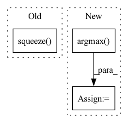

Pattern ID :30051
Before Change
//output :shp: 1, word_voc_dim
output = self.ffnn(hidden)
return pred_arr.squeeze()
After Change
//output :shp: 1, word_voc_dim
output = self.ffnn(hidden)
output = torch.argmax( output, dim=1)
return output
In pattern: SUPERPATTERN
Frequency: 6
Non-data size: 3
Instances Fragment ID: 89212083
Project Name: ai4bharat/indiannlp-transliteration
Commit Name: a5ee18fcb73249d40becb5dfc1cec954526730a2
Time: 2020-06-19
Author: josephgeobenjamin@gmail.com
File Name: algorithms/recurrent_nets.py
M Class Name: VocabCorrectorNet
N Class Name: VocabCorrectorNet
M Method Name: inference(2)
N Method Name: inference(2)
M Parent Class: nn.Module
N Parent Class: nn.Module
M File Name: algorithms/recurrent_nets.py
N File Name: algorithms/recurrent_nets.py
M Start Line: 690
M End Line: 699
N Start Line: 690
N End Line: 701
Before Change
assert all(image_pred[non_zero_ind,0] > 0)
image_pred_ = np.reshape(image_pred[np.squeeze(non_zero_ind),:], (-1, 7))
try:
image_pred_ = np.reshape(image_pred[np.squeeze( non_zero_ind) ,:], (-1, 7))
except:
print("No detections found!")
return 0After Change
// Process img
img_pred = prediction[0]
max_conf = np.amax(img_pred[:,5:5+num_classes], axis=1)
max_conf_score = np.argmax( img_pred[:,5:5+num_classes], axis=1)
max_conf_score = np.expand_dims(max_conf_score, axis=1)
max_conf = np.expand_dims(max_conf, axis=1)
seq = (img_pred[:,:5], max_conf, max_conf_score)
image_pred = np.concatenate(seq, axis=1) Fragment ID: 89212055
Project Name: geohot/tinygrad
Commit Name: 0f58c4c64869d44a74a08a6d5d1362d509740d1a
Time: 2023-02-26
Author: 39754370+jla524@users.noreply.github.com
File Name: examples/yolov3.py
M Class Name: AnonimousClass
N Class Name: AnonimousClass
M Method Name: process_results(4)
N Method Name: process_results(4)
M Parent Class:
N Parent Class:
M File Name: examples/yolov3.py
N File Name: examples/yolov3.py
M Start Line: 133
M End Line: 215
N Start Line: 96
N End Line: 140
Before Change
pred_mask_vis = colorize_semseg(pred_mask, num_classes=SYNPICK_CLASSES) // [T, 3, h, w]
frames_colorized = colorize_semseg(postprocess_mask(frames_seg.squeeze()), num_classes=SYNPICK_CLASSES).unsqueeze(dim=0) // [1, T, 3, h, w]
frames_colorized_vis = postprocess_img(frames_colorized.squeeze(dim=0) ) // [T, 3, h, w]
input_colorized = frames_colorized[:VIDEO_IN_LENGTH]
colorized_then_pred = pred_colorized_mask_model.pred_n(input_colorized, pred_length=VIDEO_PRED_LENGTH)After Change
pred_rgb = pred_rgb.argmax(dim=2).squeeze() // [T, h, w]
pred_then_colorized_vis = colorize_semseg(postprocess_mask(pred_rgb), num_classes=SYNPICK_CLASSES).transpose(0, 3, 1, 2) // [T, 3, h, w]
frames_seg = torch.stack([seg_model(frames[:, i]) for i in range(frames.shape[1])], dim=1).argmax(dim=2) // [1, T, 1, h, w]
frames_seg_in = torch.stack([(frames_seg == i) for i in range(SYNPICK_CLASSES)], dim=2).float() // [1, T, c, h, w] one-hot float
input_seg = frames_seg_in[:, :VIDEO_IN_LENGTH] // [1, t, c, h, w]
pred_mask = pred_mask_model.pred_n(input_seg, pred_length=VIDEO_PRED_LENGTH).argmax(dim=2) // [1, n, 1, h, w]
pred_mask = torch.cat([input_seg.argmax(dim=2), pred_mask], dim=1).squeeze() // [T, h, w]
pred_mask_vis = colorize_semseg(postprocess_mask(pred_mask), num_classes=SYNPICK_CLASSES).transpose(0, 3, 1, 2) // [T, 3, h, w]
frames_colorized = colorize_semseg(postprocess_mask(frames_seg.squeeze()), num_classes=SYNPICK_CLASSES)
frames_colorized_vis = frames_colorized.transpose(0, 3, 1, 2) // [T, 3, h, w]
input_colorized = preprocess_img(frames_colorized[:VIDEO_IN_LENGTH]).to(DEVICE).unsqueeze(dim=0) // [b, t, 3, h, w]
colorized_then_pred = pred_colorized_mask_model.pred_n(input_colorized, pred_length=VIDEO_PRED_LENGTH) Fragment ID: 89212087
Project Name: ais-bonn/vp-suite
Commit Name: 13016d4ab8ba4f8e7ee087155a6c5171f4d00ba3
Time: 2021-08-02
Author: boltres@ais.uni-bonn.de
File Name: scripts/visualize_4_way.py
M Class Name: AnonimousClass
N Class Name: AnonimousClass
M Method Name: visualize_4_way(1)
N Method Name: visualize_4_way(1)
M Parent Class:
N Parent Class:
M File Name: scripts/visualize_4_way.py
N File Name: scripts/visualize_4_way.py
M Start Line: 16
M End Line: 73
N Start Line: 17
N End Line: 74
Before Change
for data in test_loader:
x = data[0].squeeze(0).squeeze(0).detach().cpu().numpy()
y = data[1].squeeze(0).squeeze(0).detach().cpu().numpy()
x_seg = data[2].squeeze( 0) .squeeze(0).detach().cpu().numpy()
y_seg = data[3].squeeze(0).squeeze(0).detach().cpu().numpy()
x = ants.from_numpy(x)
y = ants.from_numpy(y)
After Change
// whichtoinvert=[True, False, True, False]
def_segs.append(def_seg.numpy()[None, ...])
def_segs = np.concatenate(def_segs, axis=0)
def_seg = np.argmax( def_segs, axis=0)
flow = np.array(nib_load(reg12["fwdtransforms"][0]), dtype="float32", order="C")
flow = flow[:,:,:,0,:].transpose(3, 0, 1, 2)
def_seg = torch.from_numpy(def_seg[None, None, ...])
Fragment ID: 89212054
Project Name: junyuchen245/transmorph_transformer_for_medical_image_registration
Commit Name: 0612d1a704653ff98a92a228ecaefd2023577062
Time: 2022-09-07
Author: jchen245@jhmi.edu
File Name: IXI/Baseline_traditional_methods/SyN/infer_IXI.py
M Class Name: AnonimousClass
N Class Name: AnonimousClass
M Method Name: main(0)
N Method Name: main(0)
M Parent Class:
N Parent Class:
M File Name: IXI/Baseline_traditional_methods/SyN/infer_IXI.py
N File Name: IXI/Baseline_traditional_methods/SyN/infer_IXI.py
M Start Line: 57
M End Line: 86
N Start Line: 58
N End Line: 96
Before Change
image_pred_ = np.reshape(image_pred[np.squeeze(non_zero_ind),:], (-1, 7))
try:
image_pred_ = np.reshape(image_pred[np.squeeze( non_zero_ind) ,:], (-1, 7))
except:
print("No detections found!")
passAfter Change
// Iterate over batches
for img_pred in prediction:
max_conf = np.amax(img_pred[:,5:5+num_classes], axis=1)
max_conf_score = np.argmax( img_pred[:,5:5+num_classes], axis=1)
max_conf_score = np.expand_dims(max_conf_score, axis=1)
max_conf = np.expand_dims(max_conf, axis=1)
seq = (img_pred[:,:5], max_conf, max_conf_score)
image_pred = np.concatenate(seq, axis=1) Fragment ID: 89212058
Project Name: geohot/tinygrad
Commit Name: 0f58c4c64869d44a74a08a6d5d1362d509740d1a
Time: 2023-02-26
Author: 39754370+jla524@users.noreply.github.com
File Name: examples/yolov3.py
M Class Name: AnonimousClass
N Class Name: AnonimousClass
M Method Name: show_labels(3)
N Method Name: show_labels(3)
M Parent Class:
N Parent Class:
M File Name: examples/yolov3.py
N File Name: examples/yolov3.py
M Start Line: 19
M End Line: 52
N Start Line: 15
N End Line: 36
Before Change
def __init__(self, id, text, audio, vision, labels):
super(IEMOCAP, self).__init__()
self.vision = torch.tensor(vision, dtype=torch.float32)
self.labels = torch.tensor(labels.squeeze() , dtype=torch.float32)
self.text = torch.tensor(text, dtype=torch.float32)
self.audio = torch.tensor(audio, dtype=torch.float32)
self.audio[self.audio == -np.inf] = 0After Change
self.audio[self.audio == -np.inf] = 0
// "Neutral", "Happy", "Sad", "Angry"
self.labels = torch.argmax( self.labels, dim=-1)
self.id = id
def get_seq_len(self):
return self.text.shape[1], self.audio.shape[1], self.vision.shape[1] Fragment ID: 89212060
Project Name: wenliangdai/modality-transferable-mer
Commit Name: 0f43b6f4544dff7280af5fd14f71c2b8d6ab08fd
Time: 2020-06-02
Author: wenliang.dai.1995@gmail.com
File Name: src/dataset.py
M Class Name: IEMOCAP
N Class Name: IEMOCAP
M Method Name: __init__(6)
N Method Name: __init__(6)
M Parent Class: Dataset
N Parent Class: Dataset
M File Name: src/dataset.py
N File Name: src/dataset.py
M Start Line: 120
M End Line: 120
N Start Line: 121
N End Line: 127